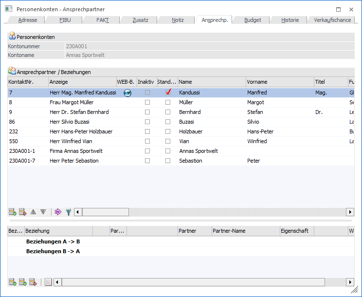
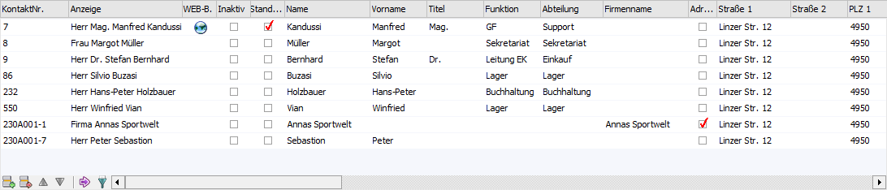
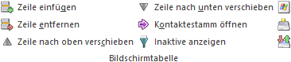
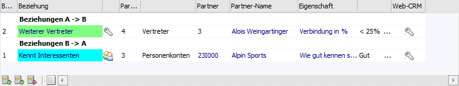
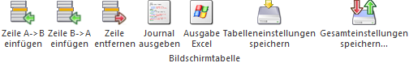

Im Register "Ansprechp." des Personenkontenstamms werden Ansprechpartner und Beziehungen des Kontos verwaltet.
Hinweis
Für jedes Personenkonto wird automatisch ein Ansprechpartner (der sogenannte "Firmen-Kontakt") angelegt.

Folgende Eingabefelder, Einstellungen und Informationen stehen zur Verfügung:
Personenkonten

Ø Kontonummer
An dieser Stelle wird die Kontonummer des ausgewählten Personenkontos angezeigt.
Ø Kontoname
Hier wird der Kontoname des aktuell gewählten Kontos dargestellt.
Tabelle "Ansprechpartner"

In der oberen Tabelle werden die aktuellen Ansprechpartner des Personenkontos angezeigt. Hierbei kann die Tabelle jederzeit um neue Ansprechpartner erweitert oder bestehende editiert werden. Bei einer Neuanlage werden folgende Felder zunächst aus dem Adressstamm des Personenkontos übernommen und können abschließend individualisiert werden:
ü Straße
ü Straße 2
ü PLZ
ü PLZ 2
ü Ort
ü Telefon 1 Land
ü Telefon 1 Vorwahl
ü Telefon 1 Nummer
ü Fax Land
ü Fax Nummer
ü WWW-Adresse
ü Land
ü Staat
Die Spalten der Tabelle entstammen großenteils dem Kontaktestamm und werden dort detailliert beschrieben. Somit wird hier nur auf speziellen Felder eingegangen.
Ø KontaktNr.
Hier wird die Kontaktnummer angezeigt. Werden neue Ansprechpartner erfasst, wird als eindeutige Kontaktnummer die Personenkontonummer + Tabellenzeilennummer (z.B. 230A001-7) vorgeschlagen. Die Nummer kann natürlich überschrieben werden.
Ø Anzeige
Hier wird die Kombination aus Titel, Name und Vorname angezeigt. Das Feld kann nicht bearbeitet werden.
Per Doppelklick auf diese Spalte wird der Kontaktestamm für den ausgewählten Kontakt geöffnet.
Ø WEB-Benutzer
Hier wird angezeigt, ob der Ansprechpartner auch ein WEB Benutzer ist (im Zusammenhang mit der WEB Edition).
Ø Inaktiv
Der Ansprechpartner kann auf inaktiv gesetzt werden.
Ø Standard
Diese Option definiert, welcher Ansprechpartner standardmäßig im Belegerfassen beim Erfassen eines neuen Beleges vorgeschlagen wird. Die Checkbox kann nur in einer Zeile aktiviert werden. Sobald die Option in einer anderen Zeile aktiviert wird, wird sie in der vorherigen Zeile deaktiviert. Ist kein Ansprechpartner als Standard gekennzeichnet wird im Belegerfassen der Eintrag "keiner" vorbelegt.
Ø Adresse des Kontos verwenden
Bei aktivierter Checkbox werden die Adressfelder des Kontos auch für diesen Ansprechpartner verwendet. D.h. jene Felder, die bereits durch das Konto definiert wurden können in dieser Zeile nicht editiert werden, sondern werden automatisch bei Veränderung im Kontenstamm aktualisiert (ausgenommen ist hier die E-Mail-Adresse; diese wird nicht übernommen). Beim "Firmen-Kontakt" kann die Option nicht zurückgesetzt werden.
Ø Mahnungsempfänger / Rechnungsempfänger / Zahlungsempfänger / kein Mailversand
Mit Hilfe der Option "Mahnungsempfänger" kann definiert werden, dass eine in der WinLine FIBU erstellte Mahnung (beim Originaldruck) an den Ansprechpartner gesendet werden soll. Grundvoraussetzung hierbei ist die Lizensierung des WinLine MAPRO.
Hinweis
Die Optionen "Rechnungsempfänger" und "Zahlungsempfänger" haben aktuelle noch keine Funktion in der WinLine.
Ø Briefanrede
Diese Spalte wird automatisch vorbesetzt mit "Sehr geehrte Frau/Sehr geehrter Herr" + Titel + Nachnahme; wobei für die Unterscheidung ob Frau oder Herr die Einstellung der Spalte "Geschlecht" ausschlaggebend ist. Steht die Einstellung "Geschlecht" auf 2-allgemein, so lautete die Vorbelegung "Sehr geehrte Damen und Herren"
Ø Kurzanrede
Diese Spalte wird automatisch vorbesetzt mit "Sehr geehrte Frau/Sehr geehrter Herr" + Nachnahme; wobei für die Unterscheidung ob Frau oder Herr die Einstellung der Spalte "Geschlecht" ausschlaggebend ist.
Ø Sortierung
Die Tabelle kann nach Spalten wie z.B. Anzeige, Name, Vorname, Ort, usw. durch einen Klick auf die Tabellenüberschrift sortiert werden. Bei Anwahl des Buttons "Ok" bzw. der Taste F5 werden die Ansprechpartner in der gewählten Reihenfolge gespeichert. Diese Reihenfolge wird dann bei diversen Auswertungen und Anzeigen (Anzeige im Konteninfo, Anzeige im Belegerfassen, etc.) berücksichtigt.
Tabellenbuttons "Ansprechpartner"

Ø Zeilen einfügen
Durch Anklicken des Buttons "Zeile einfügen" können neue Ansprechpartner angelegt werden.
Ø Zeilen entfernen
Mit Hilfe dieses Buttons kann der Ansprechpartner gelöscht werden. Hierbei werden im Vorfeld folgende Prüfungen ausgeführt:
ü 1. Ansprechpartner in mehreren
Wirtschaftsjahren vorhanden
Zunächst wird geprüft, ob der gleiche
Ansprechpartner in weiteren Wirtschaftsjahren vorhanden ist. Hierbei werden die
Datenfeld "Kontaktnummer", "Anrede", "Titel", "Vorname" und "Name" für einen
Abgleich genutzt. Ist der Ansprechpartner in mehreren Wirtschaftsjahren
vorhanden, so kann die Löschung im Anschluss in allen Wirtschaftsjahren oder nur
im aktuellen Wirtschaftsjahr erfolgen.
ü 2. Ansprechpartner in
Bewegungsdaten vorhanden
Als nächstes wird geprüft, ob der Ansprechpartner in
Belegen oder CRM-Fällen vorhanden ist und gefragt, ob eine Löschung (bei
Vorhandensein) definitiv durchgeführt werden soll.
Hinweis
Ist der Ansprechpartner in mehreren Wirtschaftsjahren vorhanden, die Löschung wird aber nur im aktuellen Jahre durchgeführt, so wird der Ansprechpartner aus Belegen, CRM-Fällen, Merklisten / Kampagnen, Archiveinträgen (Beschlagwortung) und Lagerorten nicht entfernt. Dieses ist auch der Fall, wenn eine Löschung in einem oder mehreren Wirtschaftsjahren nicht möglich ist (z.B. da der Name nicht gleichlautend ist).
Achtung
Handelt es sich um einen italienischen Mandanten (lt. Länderstamm in den FIBU-Parametern), so kann der erste Ansprechpartner zu einem Konto nicht gelöscht werden, da dieser für die Auswertung "Ritenuta D'Acconto" verwendet wird. Zusätzlich ist es nicht möglich den sogenannten Standard-Ansprechpartner oder Firmenkontakte zu löschen.
Ø Zeilen nach oben verschieben / Zeile nach unten verschieben
Durch Anklicken dieser Buttons können die Ansprechpartner beliebig gereiht werden. Beim Druck des Buttons "Ok" werden die Ansprechpartner in der ausgewählten Reihenfolge gespeichert. Die Reihenfolge wird auch bei diversen Auswertung bzw. Anzeigen berücksichtigt (Konteninfo, Personenkontenliste, etc.).
Ø Kontaktestamm öffnen
Durch Anklicken des Buttons "Kontaktestamm öffnen" wird der gerade aktive Datensatz im Fenster "Kontakte" geöffnet und kann dort bearbeitet werden.
Wird im Personenkontenstamm der Ansprechpartner gewechselt, so wird auch die Anzeige im Kontakte-Fenster aktualisiert. Wird das Personenkonto gewechselt, so muss das Kontakte-Fenster manuell aktualisiert werden (Kontakte-Button oder Klick in die Tabelle).
Hinweis
Werden in der Ansprechpartnertabelle Werte eines Ansprechpartners geändert oder dieser an eine andere Position geschoben UND wird dieser Ansprechpartner gleichzeitig im Fenster "Kontakte" gespeichert, so werden die Änderungen in der Ansprechpartnertabelle verworfen!
Ø Inaktive anzeigen
Wenn Ansprechpartner nicht mehr der Firma angehören oder dergleichen, können diese Ansprechpartner auf Inaktiv gesetzt werden. Im Laufe der Zeit können dadurch viele Datensätze entstehen, die aber nicht unbedingt notwendig sind. Daher werden inaktive Ansprechpartner standardmäßig nicht angezeigt. Damit aber alle Ansprechpartner sichtbar werden, kann diese durch Anklicken des Buttons "Inaktive anzeigen" erreicht werden. Die Einstellung des Buttons wird benutzerspezifisch gespeichert.
Ø Ausgabe Excel
Durch Anwahl des Buttons "Ausgabe Excel" wird der Inhalt der Tabelle an Microsoft Excel übergeben.
Ø Tabelleneinstellungen speichern
Die Spalten einer Tabelle können grundsätzlich an beliebige Positionen verschoben, bzw. in der Breite entsprechend angepasst werden. Durch Anwahl des Buttons "Tabelleneinstellungen speichern" werden die Einstellungen benutzerspezifisch gespeichert und bei dem nächsten Aufruf des Programmpunktes wieder vorgeschlagen.
Ø Gesamteinstellungen speichern
Im Gegensatz zu "Tabelleneinstellungen speichern" können mit "Gesamteinstellungen speichern" mehrere Tabellenaufbauten gespeichert und nach Wunsch geladen werden. Zusätzlich werden Sonderfunktionen der Tabelle (z.B. "Spalte gruppieren") ebenfalls bei der Speicherung bedacht.
Tabelle "Beziehungen"

Neue Beziehungen können mit Hilfe der Tabellenbuttons ("Zeile A->B einfügen" oder "Zeile B->A einfügen") erzeugt werden. Dabei stehen folgende Felder zur Verfügung:
Ø Beziehungsnummer
Aus der Auswahlbox kann die Art der Beziehung ausgewählt werden, welche erfasst werden soll.
Ø Beziehung
Hier wird die Bezeichnung der Beziehung angezeigt, wobei die Bezeichnung in der Farbe dargestellt wird, welche im Beziehungsstamm hinterlegt wurde.
Ø Icon
In diesem Feld wird - sofern im Beziehungsstamm hinterlegt - die Grafik der Beziehung dargestellt.
Ø Partner-Typ
Aus der Auswahlbox kann der Partner-Typ gewählt werden, wobei hier die Optionen "Personenkonten", "Vertreter", "Kontakte" und "Projekte" zur Verfügung stehen. Im nächsten Feld wird der ausgewählt Typ in Klartext angezeigt.
Ø Partner
In diesem Feld muss der Partner der Beziehung ausgewählt werden, wobei mit der Matchcode-Funktion nach allen "Partnern" gesucht werden kann. Abhängig davon, welcher Typ ausgewählt wurde, wird auch entsprechend gesucht (nach Personenkonten, Vertretern, Kontakte oder Projekte). Wurde ein Partner ausgewählt, wird der Name des Partners im nächsten Feld angezeigt.
Ø Eigenschaft
In diesem Feld wird die im Beziehungsstamm hinterlegte Eigenschaft angezeigt. In der nächsten Spalte kann der dazugehörige Wert hinterlegt werden. Je nach Eigenschaft kann der Werte aus einer Auswahlbox ausgewählt oder direkt eingetragen werden.
Ø Web-CRM
Sofern die WEBEdition installiert ist (zumindest CRM I) wird in dieser Spalte das Symbol angezeigt. Beim Klick auf diesen Button werden die CRM-Fälle angezeigt, bei denen die aktuell aktivierte Beziehung hinterlegt ist.
Tabellenbuttons "Beziehungen"

Ø Zeile A->B einfügen
Durch Anklicken des Buttons "Zeile A->B einfügen" kann eine neue "A zu B"-Beziehung angelegt werden.
Ø Zeile B->A einfügen
Durch Anwahl des Buttons "Zeile B->A einfügen" kann eine neue "B zu A"-Beziehung angelegt werden.
Ø Zeile entfernen
Durch Anklicken des Entfernen-Buttons können bestehende Beziehungen gelöscht werden. Die beiden Zeilen…
ü Beziehungen A -> B
ü Beziehungen B -> A
… können nicht gelöscht werden, da es sich dabei um die Überschriftenzeilen handelt.
Ø Journal ausgeben
Durch Anklicken des Buttons "Journal ausgeben" wird ein Beziehungsjournal ausgegeben, wobei als Hauptkriterium das Personenkonto verwendet wird.
Hinweis
Das Beziehungsjournal kann auch ausgegeben werden, wenn ein Doppelklick auf eine Beziehung durchgeführt wird - in diesem Fall wird als Hauptkriterium die Beziehung verwendet - d.h. in diesem Fall werden alle Partner der ausgewählten Beziehung angezeigt.
Ø Ausgabe Excel
Durch Anwahl des Buttons "Ausgabe Excel" wird der Inhalt der Tabelle an Microsoft Excel übergeben.
Ø Tabelleneinstellungen speichern
Die Spalten einer Tabelle können grundsätzlich an beliebige Positionen verschoben, bzw. in der Breite entsprechend angepasst werden. Durch Anwahl des Buttons "Tabelleneinstellungen speichern" werden die Einstellungen benutzerspezifisch gespeichert und bei dem nächsten Aufruf des Programmpunktes wieder vorgeschlagen.
Ø Gesamteinstellungen speichern
Im Gegensatz zu "Tabelleneinstellungen speichern" können mit "Gesamteinstellungen speichern" mehrere Tabellenaufbauten gespeichert und nach Wunsch geladen werden. Zusätzlich werden Sonderfunktionen der Tabelle (z.B. "Spalte gruppieren") ebenfalls bei der Speicherung bedacht.